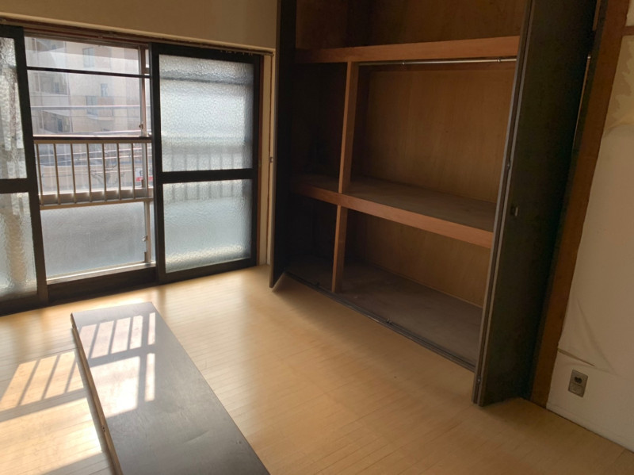
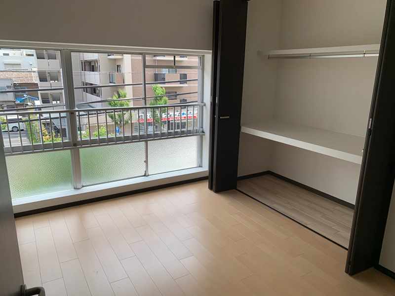
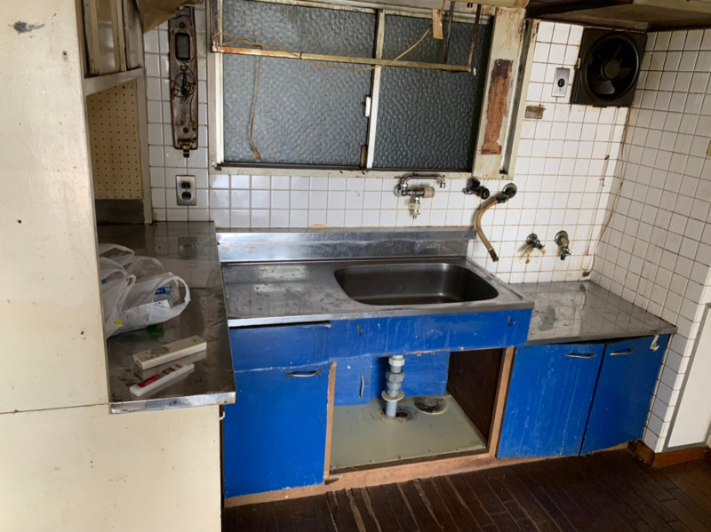
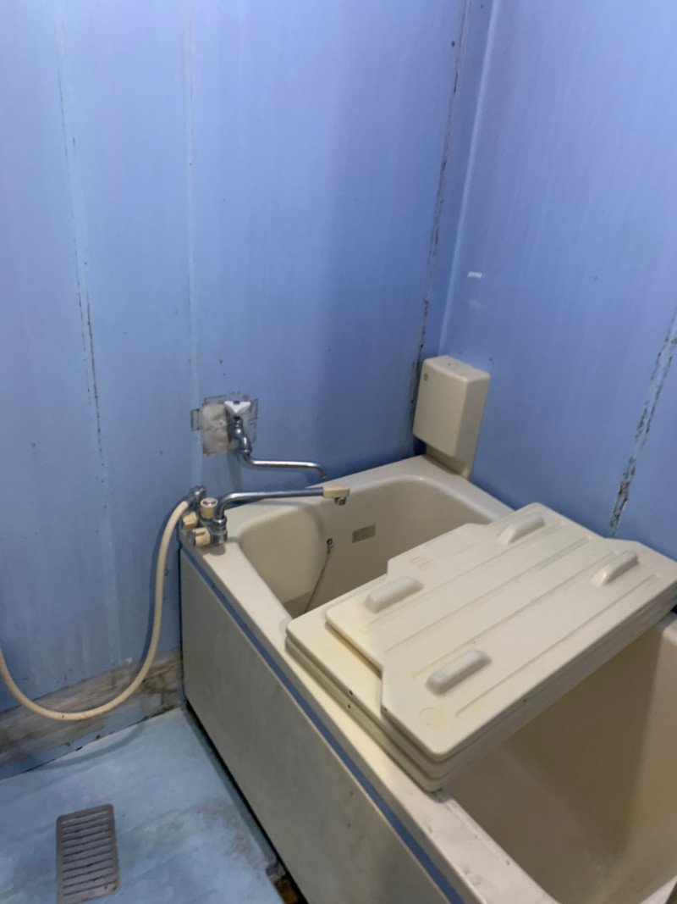
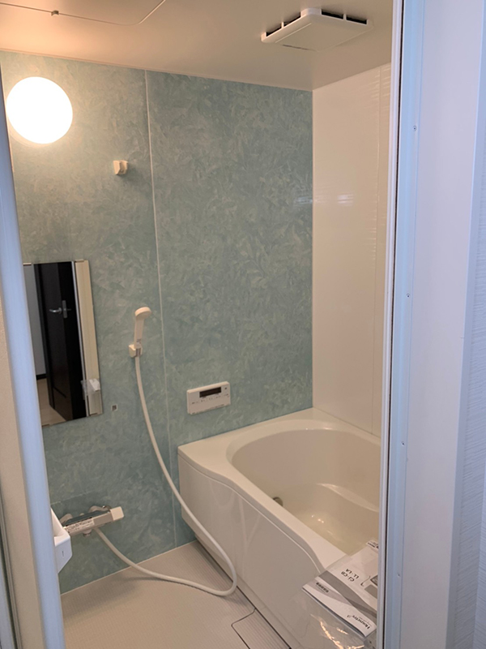
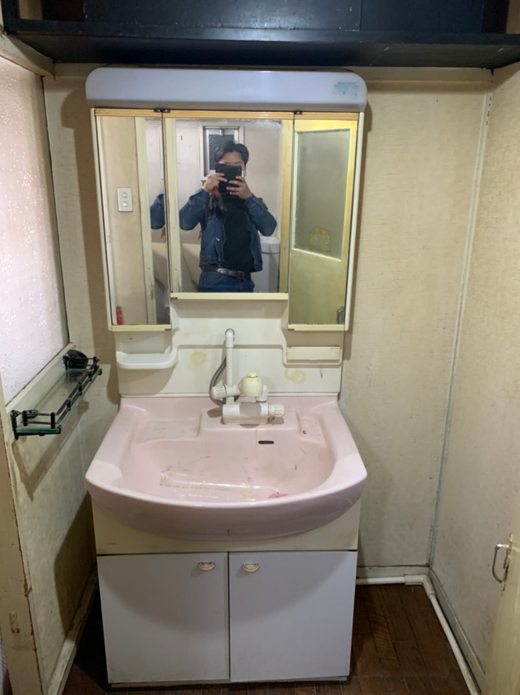
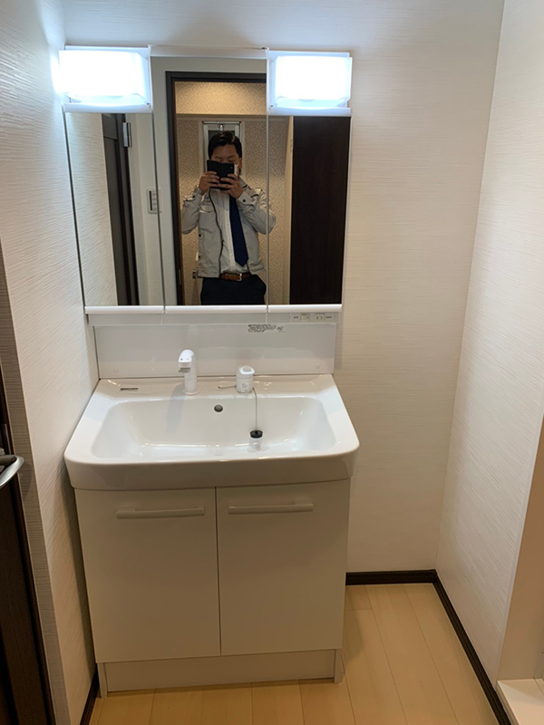
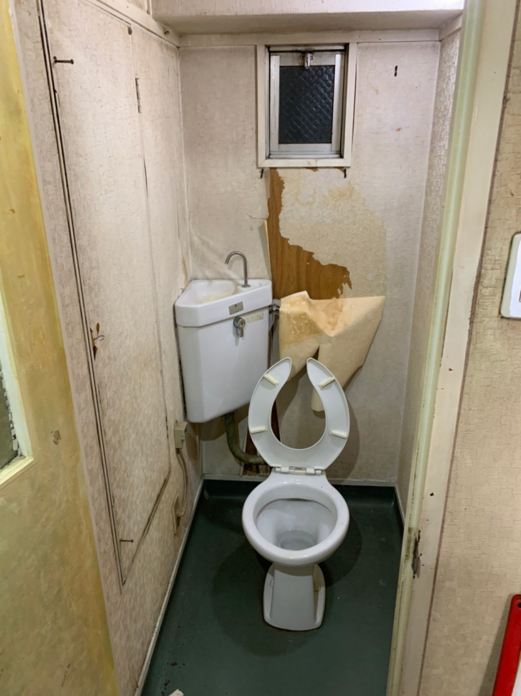
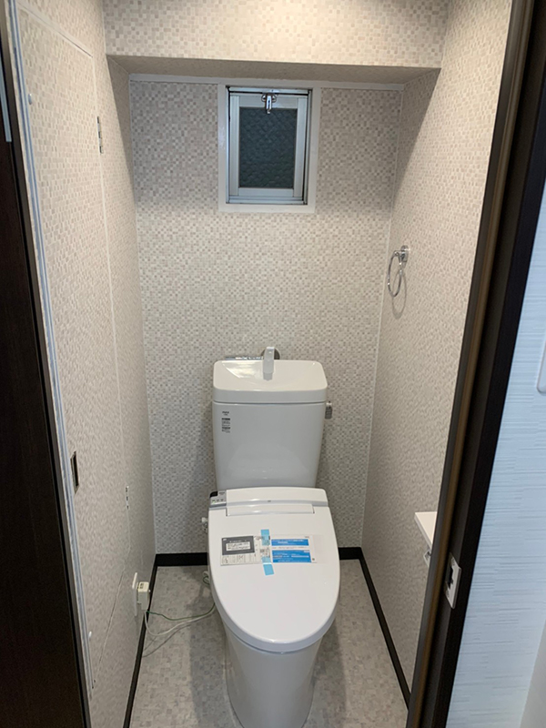

PROJECT
収納と内装を見直し、明るく開放的な住空間へ。
マンションの住空間を幅広くリフォームしました。洋室では、既存の大型クローゼットを特注品へ交換し、クロスやフローリングも一新。キッチンでは上部空間を活用して収納を新設し、窓・クロス・フローリング・照明も交換することで、室内全体を明るく開放的な印象へと改善しました。
トイレはウォシュレットタイプへ交換し、ユニットバスや洗面化粧台も更新。洗面台は洗髪可能なタイプを採用するなど、見た目だけでなく日々の使いやすさにも配慮しています。
- AREA
- 大阪府
- CATEGORY
- マンションリフォーム
- WORKS
- 洋室・キッチン・浴室・洗面・トイレ
BEFORE / AFTER
施工前後を比較
居室
大型クローゼットを特注品へ交換し、クロス・フローリングも一新しました。


キッチン
上部空間に収納を新設。窓・クロス・フローリング・照明も交換し、明るく開放的な空間へ。


浴室
ユニットバスを交換し、毎日使いやすい水回りへ。


洗面
洗髪可能な洗面化粧台へ交換し、使い勝手を改善しました。


トイレ
ウォシュレットタイプへ交換し、快適性を高めました。


CONTACT